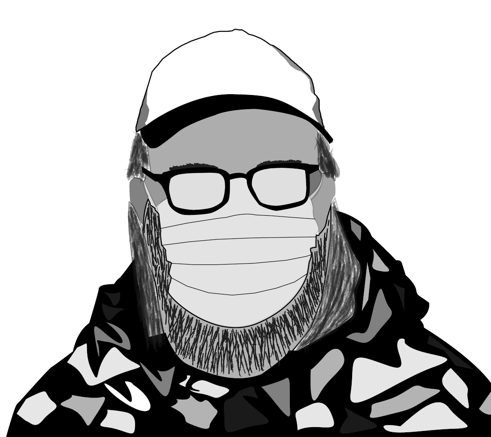

Hvem er jeg?
Mit navn er Kasper Dahl Pedersen. Jeg er multimediedesigner med speciale i fotografi og video. Jeg er kreativ og professionel og vil gerne arbejde sammen med dig om dine kreative projekter. Med beliggenhed i Odense ligger jeg centralt i landet.
Hvad kan jeg?
Udover at jeg brænder for foto og video så kan jeg meget mere end det. Mangler du eksempelvis en der kan løse en grafisk opgave sammen med at jeg producerer en video til dig, så er jeg din mand!
